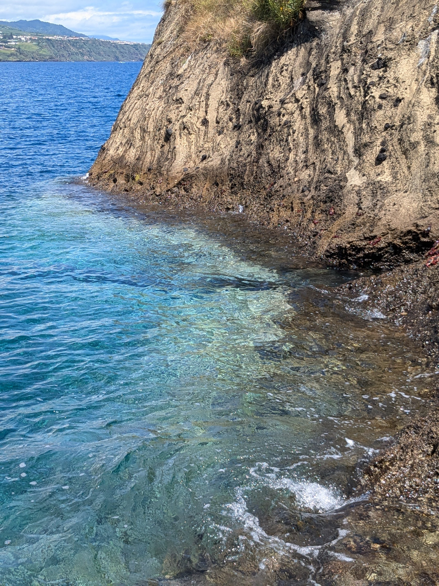

This body is like all others,
it is there, even if not seen or felt, it is there. The idea that I am not within the boundaries of my body had to be felt not as an idea but as a sensation. Which led me to believe there is an unseen border between us and the other(s).
This border I look at much like that of an island. An island has its own land, land above water and land underneath the water. The “bodily” border of it would be where it meets the ocean, the felt border outside of the body would be all its unseeable space held underneath, where there is both land and water.

Between walkable land and the next foreseeable land there is water

, we can choose to see it as something which links the two pieces of terrain, or as a separator of the two. It is possible to face our body as that of an island, one moving with a tide. There is a similar reduction to be made, that of the body, that of the space around the body, and that of the place where it is situated.
A relationship between these three notions is to be understood as one, as you and myself, as they are. In the same manner water reflects on to the land, our environment is reflected on to us, through our bodies.